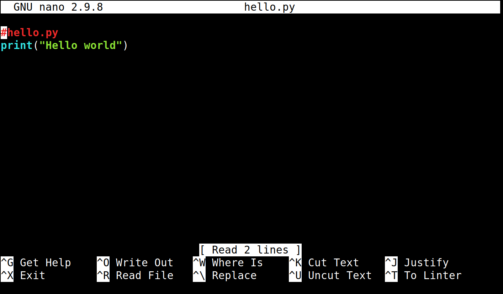

Introduction to Python
Contents
Introduction to Python#
BB1000#
KTH
layout: false
What is Python#

{kind=link}
Python is a scripting language written by Guido van Rossum
My original motivation for creating Python was the perceived need for a higher level language in the Amoeba [Operating Systems] project. I realized that the development of system administration utilities in C was taking too long. Moreover, doing these things in the Bourne shell wouldn’t work for a variety of reasons. … So, there was a need for a language that would bridge the gap between C and the shell.
Who uses Python#
From small scripts to large applications
print("Hello world!")

How to run Python#
Command-line#
Many Python programs are run from the computer’s command-line interface (CLI). In the CLI you type commands that the computer interprets and acts upon.
The CLI on a mac/linux is a terminal program that reads commands in the bash scripting language (or equivalent)
The CLI on windows is the console program known as CMD.
The CLI prompt is a character string printed at the beginning of each line when waiting for a command
In these slides we use the convention
$is the bash prompt (mac/linux)C>is the CMD prompt (windows)
Typing python in the CLI starts an interactive Python session accepting
Python commands
>>>is the Python prompt
The Python interactive shell is also known as the REPL (read-evaluate-print-loop)
R read a Python expression
E evaluate the expression
P print the value of the expressions to the screen
L loop (start over)
$ python
>>> print("Hello world")
Hello world
>>>
Use case: a desktop calculator
$ python
>>> 10 + 10*0.25
12.5
>>> _ * 2
25.0
in this context the underscore
_means the value of the previous expression
Running Python scripts#
Assuming you have a file with Python instructions:
hello.py

you run the script by giving it as a command-line argument to the python interpreter
$ python hello.py
Hello world
Goodbye
Creating Python scripts#
Text editors#
To enter code into files you need to use a text editor (not a word processor
like Microsoft Word). A text editor is good for programming if it automatically
colors special keywords for the programming language of that file. A simple
editor that fulfills this is nano.

Developers survey on most popular programming editor : normally lists editors like vim, emacs, atom, sublime. Spending time to learn one well is worth the investment.
IDE:s#
IDE = Integrated development environment
$ pip install mu-editor
$ mu-editor hello.py

Visual Studio Code#
Microsoft open source project

Pycharm#
Community and Professional editions from JetBrains

see https://www.jetbrains.com/student/
Notebooks#
work/develop in browser
mix documentation and code
$ jupyter notebook
 * good for exploration/experimentation/demonstration
* not good for writing large structured programs
* good for exploration/experimentation/demonstration
* not good for writing large structured programs
Language fundamentals#
Python names#
Names in Python are what most languages refer to as variables, or variable names
To save the value of an object a name can be assigned to it
The assignment operator is
=Assignment is to bind a name to an object
>>> x = 8 * 9
The right-hand side is evaluated
An
intobject with value 72 is created in memoryAn association is created with this object and the name
x
┏━━┓
┃ x┃
┌─┐ ┌─┐ ┡━━┩
│8│ * │9│ → │72│
└─┘ └─┘ └──┘
The name can be used in other expressions as an alias for that value
>>> print(x + x)
144
Python values and types#
Objects and expressions in Python have a value of some type. A type determines the range of possible values and operations that are defined for objects of that type.
Numerical types#
whole numbers (
int): e.g.-1, 7, 2000decimal numbers (
float):3.14, 1.0 -7.25complex numbers (
complex):1j, 7+5jlogical (
bool):True,False
Numerical operations#
+Addition-Subtraction*Multiplication/Division (7 / 2 → 3.5)//Integer floor division (7 // 2 → 3)%Integer modulus (remainder) (7 % 2 → 1)
Logical operations#
andTrue and True→TrueTrue and False→FalseFalse and False→False
orTrue or True→TrueTrue or False→TrueFalse or False→False
notnot True→Falsenot False→True
equality
1 == 1→True1 == 1.0→True1 != 1→False
identity
1 is 1→True1 is 1.0→False
relational
1 < 1→False1 >= 1.0→True
Strings: str#
a string is a sequence of characters (unicode)
literal strings are written within quotation marks
single
'and double"quotation marks have the same statusthree quotation marks limit strings that can span several lines
there is no single character type
>>> print("It's time")
It's time
>>> print('Our boss is "nice". üòÄ')
Our boss is "nice". üòÄ
>>> print("""Hello
... world""")
Hello
world
String operations#
Concatenation
>>> 'hello' + 'world'
'helloworld'
Duplication
>>> 'bye' * 2
'byebye'
Common methods#
>>> 'FORTRAN'.lower()
'fortran'
>>> 'c++'.upper()
'C++'
>>> 'jo'.capitalize()
'Jo'
Container types#
The most important container types are lists, tuples and dictionaries
Lists#
A list is a ordered sequence of elements
A literal list in code is defined by square brackets and comma-separated elements
[0, 1, 2]List can have members of different types
List members are referenced with
[n]wheren=0, 1, 2...A list can be empty,
[]
>>> colours = ['hearts', 'spades', 'diamonds', 'clubs']
>>> values = [2, 3, 4, 5, 6, 7, 8, 9, 10, 'knight', 'queen', 'king', 'ace']
>>> colours[0]
'hearts'
Note that brackets are both used in the notation for a literal list and for getting a member from a collection (not only for lists)
>>> a_list = [1, 'a']
>>> a_member = a_list[0]
Tuples#
An immutable (unchangeable) sequence of objects
Similar to lists
() is the empty tuple
(1,) contains 1 element -note the comma
Handy packing and unpacking
>>> t = 1, 2 # packing
>>> x, y = t # unpacking
>>> x
1
>>> y
2
>>> x, y = y, x # swapping (packing and unpacking)
>>> x
2
>>> y
1
Dictionaries#
The
dicttype define sets of key-value pairsCurly braces with comma-separates pairs define a literal dict
Each pair is separated by a colon
:The key can be any immutable (unchangeable) object
Very useful for complex structures
Efficient and highly optimized
empty = {} # empty dict
newdict = {'a': 1, 'b': 2}
Program logic#
Repetition (iteration, looping)#
The
for ... instatement is used repeat the same operation for all elements of a sequenceA loop variable will reference the elements of the sequence, one at a time
Looping over lists#
>>> for e in [1, 2, 3]:
... print(e)
1
2
3
Looping over strings#
>>> for c in 'hello':
... print(c)
h
e
l
l
o
Looping over dictionaries#
>>> d = {'a': 1, 'b': 2}
>>> for k, v in d.items():
... print(k, v)
a 1
b 2
>>> for k in d:
... print(k, d[k])
a 1
b 2
Branching#
Conditional execution of code blocks depending on whether an expression evaluates to True or not:
>>> if True:
... print("Yes")
... else:
... print("No")
Yes
>>> i = j = 0
>>> if i > j:
... print(i, " is larger than ", j)
... else:
... print(i, "is smaller than or equal to", j)
0 is smaller than or equal to 0
Most object types have some truthiness. Empty lists in a logical context evaluate to False, non-empty to True
>>> if []:
... print("Non-empty list")
... else:
... print("Empty list")
Empty list
Program units#
Functions#
Functions are objects that can take some input and return some output. Functions are the primary way of grouping code into independent units, that can be tested and reused
Function definitions start
def, a name, parentheses with or without arguments (comma-separated) and a colon. The body of the function is indented with respect to thedefkeyword. The last line of a function definition is normally areturnstatement and determines the value of a function call
>>> def square(x):
... x2 = x * x
... return x2
Functions are called with function name and an actual parameter.
>>> square(2)
4
Inside the function the formal parameter
xbecomes a reference to the actual parameter2.
Modules#
a file with python source
name is the filename without the
.pyextension
importmodules to reuse codemembers of module referenced with dot notation
module.member
Commonly used Python modules
sysosmath
sys#
system modules
needed e.g. for arguments to a script
sys.argvis a list containing command-line argumentsThe first element
sys.argv [0]is the file name
import sys
infile = sys.argv[1]
os#
Interaction with operating system
Example: execute a unix command
import os
os.system('/bin/date')
math#
all basic elementary functions
fundamental constants
import math
print(math.sin(math.pi/2))
Tip#
Many use the math modules as a desktop calculator
$ python
>>> from math import *
>>> print(pi/2)
1.5707963267948966
>>>
Writing/using your own modules#
Suppose you have written file
hello.pywith functionsay_hello
#hello.py
def say_hello():
return "Hello world!"
To access the same function in other code, import the module
>>> import hello
>>> message = hello.say_hello()
>>> print(message)
Hello world!
Sample code: multiplication table#
Version 1: if we only know print
print(1 * 7)
print(2 * 7)
print(3 * 7)
Version 2: extract the varying data to a variable
i = 1
print(i * 7)
i = 2
print(i * 7)
i = 3
print(i * 7)
Version 3: introduction the for loop, indented blocks
for i in (1, 2, 3, 4, 5, 6, 7, 8 , 9, 10):
print(i * 7)
Version 4: the range function
n = 7
for i in range(1, 11):
print(i * n)
Version 5: define as a function
def print_mult_table(n):
for i in range(1, 11):
print(i * n)
Version 6: call the function from the command line
import sys
def print_mult_table(n):
for i in range(1, 11):
print(i * n)
if __name__ == "__main__":
print_mult_table(int(sys.argv[1]))
the system variable
__name__has the value"__main__"(double underscores) when the file is executed as a programit has the value equal to the file name when it is imported as a module
command-line argments appear in the system variable
sys.argv, a Python list which has the file name as the first member (of index zero)
A common pattern when a file is used both as an independent script and as a module imported by other programs
Summary#
Basic syntax - indentation
Basic built-in types
Scalar and container types
Variables
Functions
Modules
Reference#
Standard documentation#
https://docs.python.org/3
On-line books#
Jake van der Plas: A Worldwind Tour of Python
Jake van der Plas: Data Science Handbook
Al Sweigart: Automate the Boring Stuff with Python
Online tutorials#
https://docs.python.org/3/tutorial/
https://realpython.com
https://dabeaz-course.github.io/practical-python
Youtube#
Variables in Python https://www.youtube.com/watch?v=_AEJHKGk9ns